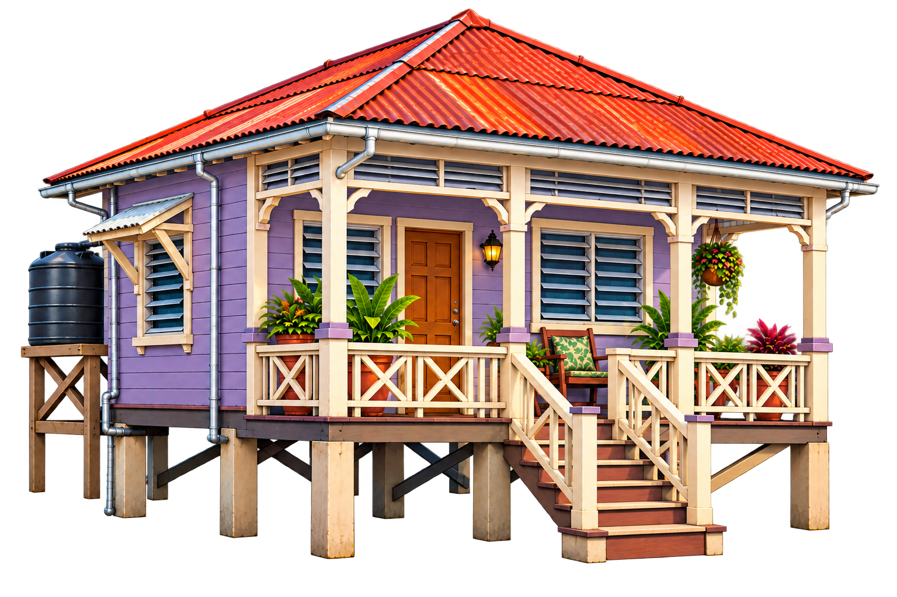
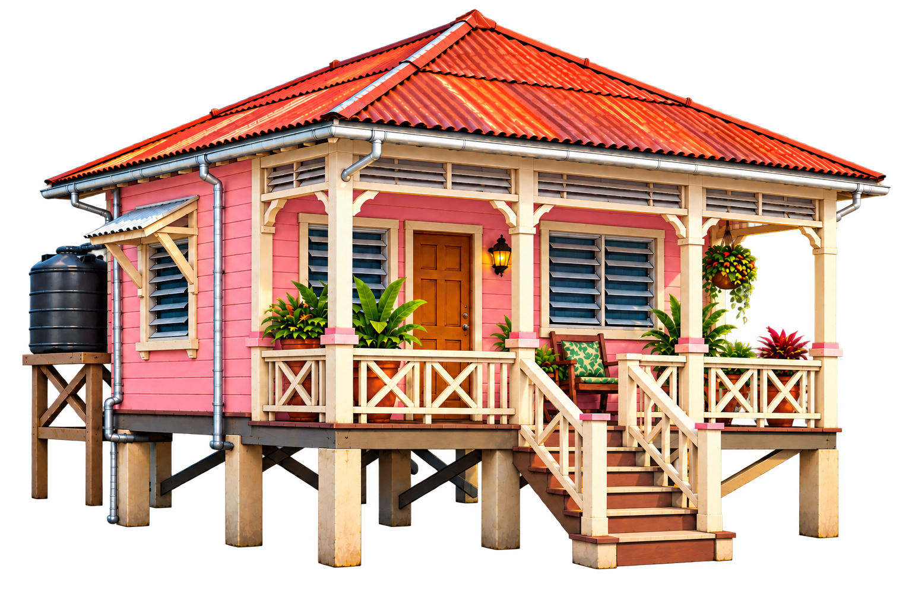
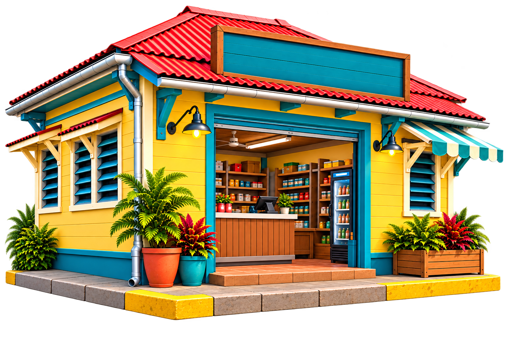
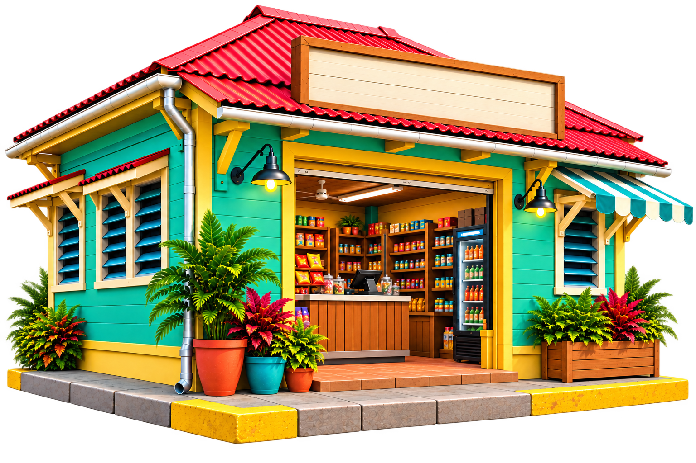

Development review only. All 15 are approved with notes as decorated assemblies. See AUDIT.md for restrictions. No gameplay or world composition.
paralin-house-hillside-01-base.png
APPROVED WITH NOTES — House, stepped terrain, retaining walls, stairs, tank and dense planting form one inseparable assembly. Requires a matching slope; not a free-standing house base. Side vegetation is very tightly framed.
paralin-house-hillside-01-pink.png
APPROVED WITH NOTES — House, stepped terrain, retaining walls, stairs, tank and dense planting form one inseparable assembly. Requires a matching slope; not a free-standing house base. Side vegetation is very tightly framed.
paralin-house-hillside-02-blue.png
APPROVED WITH NOTES — House, stepped terrain, retaining walls, stairs, tank and dense planting form one inseparable assembly. Requires a matching slope; not a free-standing house base. Side vegetation is very tightly framed.
paralin-house-raised-01-base.png
APPROVED WITH NOTES — House includes tank/stand, porch furniture, plants, stairs and supports. Open undercroft largely cuts out correctly. Place as a complete assembly; no separate occlusion or movable props.
paralin-house-raised-02-base.png
APPROVED WITH NOTES — House includes tank/stand, porch furniture, plants, stairs and supports. Open undercroft largely cuts out correctly. Place as a complete assembly; no separate occlusion or movable props.

paralin-house-raised-03-base.png
APPROVED WITH NOTES — House includes tank/stand, porch furniture, plants, stairs and supports. Open undercroft largely cuts out correctly. Place as a complete assembly; no separate occlusion or movable props.

paralin-house-small-01-base.png
APPROVED WITH NOTES — House includes tank, foundation, porch furniture, pots and dense perimeter planting. Readable silhouette; repeated planting limits modular variety.
paralin-house-small-02-base.png
APPROVED WITH NOTES — House includes tank, foundation, porch furniture, pots and dense perimeter planting. Readable silhouette; repeated planting limits modular variety.
paralin-house-small-03-base.png
APPROVED WITH NOTES — House includes tank, foundation, porch furniture, pots and dense perimeter planting. Readable silhouette; repeated planting limits modular variety.
paralin-house-two-storey-01-base.png
APPROVED WITH NOTES — House includes both galleries, plants, steps and lamps. Roof has little top padding. Near-eye-level facade perspective needs matching scene camera; not an aerial map sprite.
paralin-house-two-storey-02-pink.png
APPROVED WITH NOTES — House includes both galleries, plants, steps and lamps. Roof has little top padding. Near-eye-level facade perspective needs matching scene camera; not an aerial map sprite.
paralin-house-two-storey-03-blue.png
APPROVED WITH NOTES — House includes both galleries, plants, steps and lamps. Roof has little top padding. Near-eye-level facade perspective needs matching scene camera; not an aerial map sprite.
paralin-shop-corner-01-base.png
APPROVED WITH NOTES — Shop includes pavement/curb, plants, counter, stocked shelves, refrigerator and lit lamps. Stock cannot serve as dynamic countable learning objects. Blank sign supports a separate accessible label. Awning is close to the right edge.

paralin-shop-corner-02-green.png
APPROVED WITH NOTES — Shop includes pavement/curb, plants, counter, stocked shelves, refrigerator and lit lamps. Stock cannot serve as dynamic countable learning objects. Blank sign supports a separate accessible label. Awning is close to the right edge.

paralin-shop-corner-03-blue.png
APPROVED WITH NOTES — Shop includes pavement/curb, plants, counter, stocked shelves, refrigerator and lit lamps. Stock cannot serve as dynamic countable learning objects. Blank sign supports a separate accessible label. Awning is close to the right edge.